API 接口渗透测试

1 API 接口介绍
1.1 RPC（远程过程调用）
远程过程调用（英语：Remote Procedure Call，缩写为 RPC）是一个计算机通信协议。该协议允许运行于一台计算机的程序调用另一台计算机的子程序，而程序员无需额外地为这个交互作用编程。如果涉及的软件采用面向对象编程，那么远程过程调用亦可称作远程调用或远程方法调用，例：Java RMI。
RPC 一般直接使用 TCP 协议进行通信，通常不涉及到 HTTP。HTTP 下面有2种技术：
XML-RPC（https://zh.wikipedia.org/wiki/XML-RPC）
JSON-RPC（https://zh.wikipedia.org/wiki/JSON-RPC）
Web service 和 RESTful API 都可算作远程过程调用的子集。
1.2 Web Service
Web Service 是一种服务导向架构的技术，通过标准的Web协议提供服务，目的是保证不同平台的应用服务可以互操作。
根据 W3C 的定义，Web 服务（Web service）应当是一个软件系统，用以支持网络间不同机器的互动操作。网络服务通常是许多应用程序接口（API）所组成的，它们透过网络，例如国际互联网（Internet）的远程服务器端，执行客户所提交服务的请求。
尽管W3C的定义涵盖诸多相异且无法介分的系统，不过通常我们指有关于主从式架构（Client-server）之间根据 SOAP 协议进行传递 XML 格式消息。无论定义还是实现，Web 服务过程中会由服务器提供一个机器可读的描述（通常基于WSDL）以辨识服务器所提供的 Web 服务。另外，虽然 WSDL 不是 SOAP 服务端点的必要条件，但目前基于Java 的主流 Web 服务开发框架往往需要 WSDL 实现客户端的源代码生成。一些工业标准化组织，比如 WS-I，就在 Web 服务定义中强制包含 SOAP 和 WSDL。
Web Service 是一种比较“重”和“老”的 Web 接口技术，目前大部分应用于金融机构的历史应用和比较老的应用中。
1.3 RESTful API
REST，全称是 Resource Representational State Transfer，通俗来讲就是，资源在网络中以某种表现形式进行状态转移。分解开来：
Resource：资源，即数据（前面说过网络的核心）。比如 newsfeed，friends等；
Representational：某种表现形式，比如用JSON，XML，JPEG等；
State Transfer：状态变化。通过HTTP动词实现。
RESTful API 就是符合 REST 风格的 API，传递数据也是2种形式：
XML，少见
json，常见，现在 Web 应用基本使用这种形式的 API。
1.4 MVC、MVP、MVVM
Web 应用程序和 APP 应用程序的 API 跟目前的流行框架和模式相关，主要有3种模式：MVC、MVP、MVVM。
MVC 将整个应用分成 Model、View 和 Controller 三个部分，而这些组成部分其实也有着几乎相同的职责。
视图：管理作为位图展示到屏幕上的图形和文字输出；
控制器：翻译用户的输入并依照用户的输入操作模型和视图；
模型：管理应用的行为和数据，响应数据请求（经常来自视图）和更新状态的指令（经常来自控制器）；
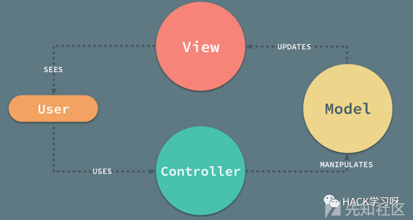
此类模式和架构的应用越来越多导致 API 接口的应用也越来越流行。想了解更多可以在网上查找相关资料。
2 API 测试环境和测试工具
2.1 Web Service 测试
2.1.1 找 Webservice 接口
Google hacking
inurl:jws?wsdl
inurl:asmx?wsdl
inurl:aspx?wsdl
inurl:ascx?wsdl
inurl:ashx?wsdl
inurl:dll?wsdl
inurl:exe?wsdl
inurl:php?wsdl
inurl:pl?wsdl
inurl:?wsdl
filetype:jws
filetype:asmx
filetype:ascx
filetype:aspx
filetype:ashx
filetype:dll
filetype:exe
filetype:php
filetype:pl
filetype:wsdl wsdl
fuzzing
爬虫
2.1.2 测试工具
涉及主要工具：
Soap UI PRO，渗透测试流程的发起，通信报文的解析、集合payload之后通信报文的重新组装等，14天试用，可以做自动化测试。
SoapUI Free，手工测试
SOAPSonar，SOAP UI 的替代。
Burp Suite，代理拦截，跟踪通信过程和结果，对通信进行重放和二次处理等。
WSSAT
WS-Attacker
### 2.1.3 测试项目
Fuzzing
XSS /SQLi/ Malformed XML
File Upload
Xpath Injection
XML Bomb (DoS)
Authentication based attacks
Replay attacks
Session fixation
XML Signature wrapping
Session timeout
Host Cipher Support/ Valid Certificate/ Protocol Support
Hashing Algorithm Support
2.1.4 手工测试方法
主要使用 Soap UI Open Source，有安全测试Case，需要配置 SOAP 代理到 Burp，数据流，现在的版本是5.4.0。
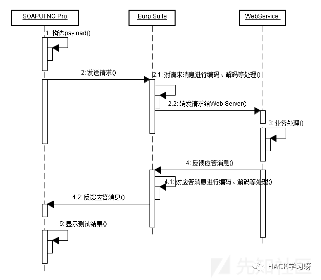
代理配置
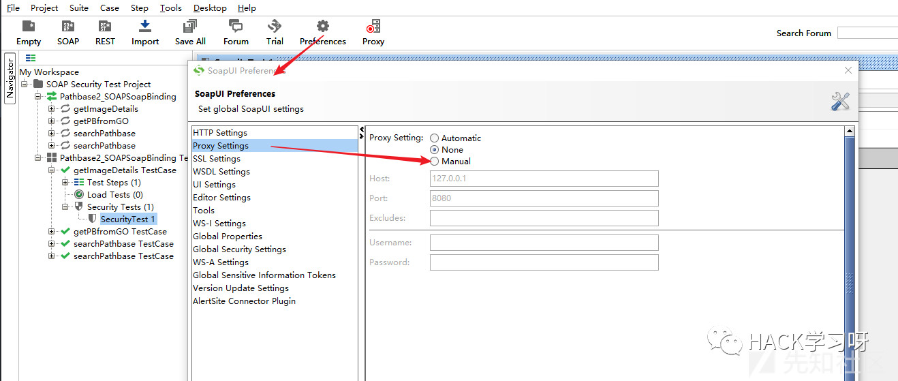
可以用 Burp 重放 SOAP 的探测 Payload。
使用 Soap UI Open Source，测试步骤：
创建工作空间
新建 SOAP 项目
增加 WSDL，配置名称和 WSDL 链接
选择要测试的 TestSuite，增加一个安全测试
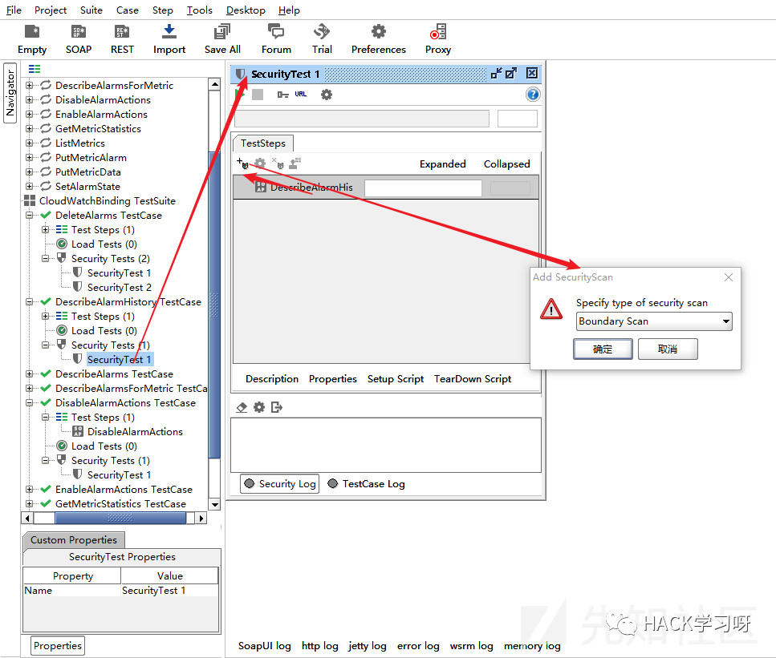
选择测试的类型，运行测试

2.1.5 自动化测试
SOAP 配置，2步，“File”-“Preference”-“Proxy”，设置 Burp 代理
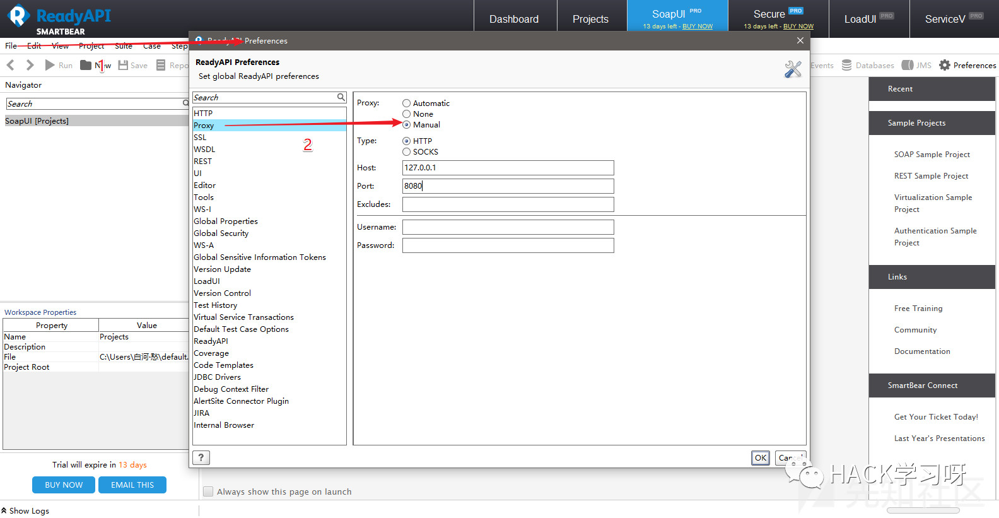
直接在 Soup UI 主菜单上选择运行一个测试。
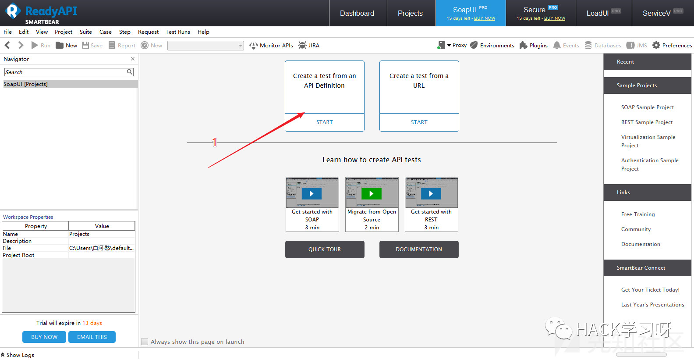
在弹出窗口中输入 WSDL 地址。
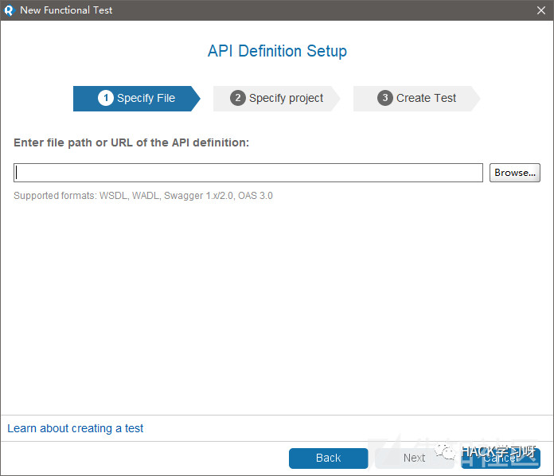
SUAP UI 会自动探测接口。然后在项目-测试Case的右键菜单中选择安全测试
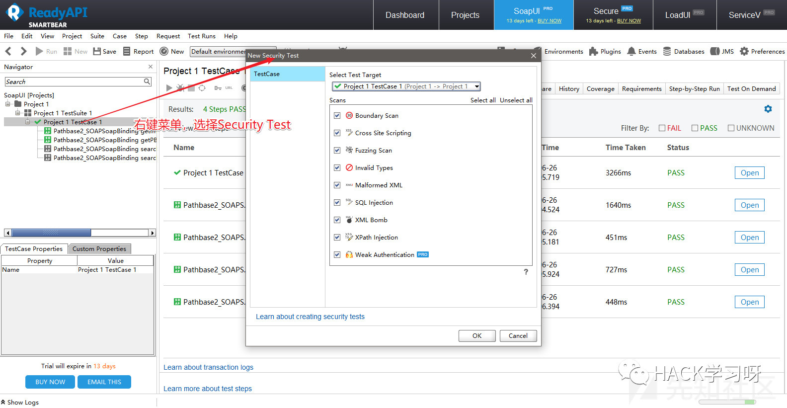
运行安全测试。
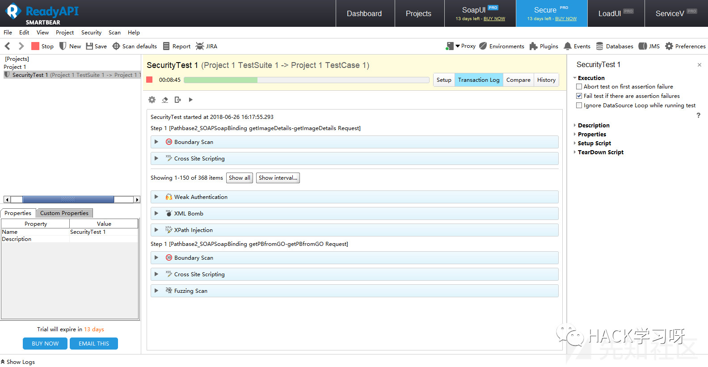
Burp 代理会捕获所有的测试请求
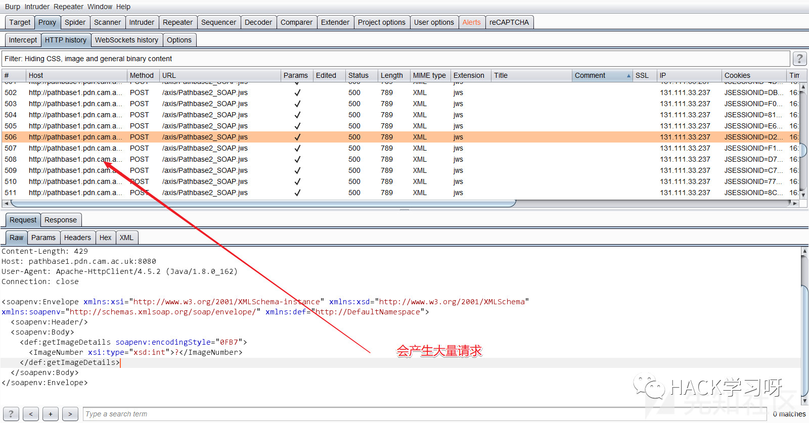
其他工具介绍
WSSAT，选择加载存在 WSDL 列表的文件，运行。
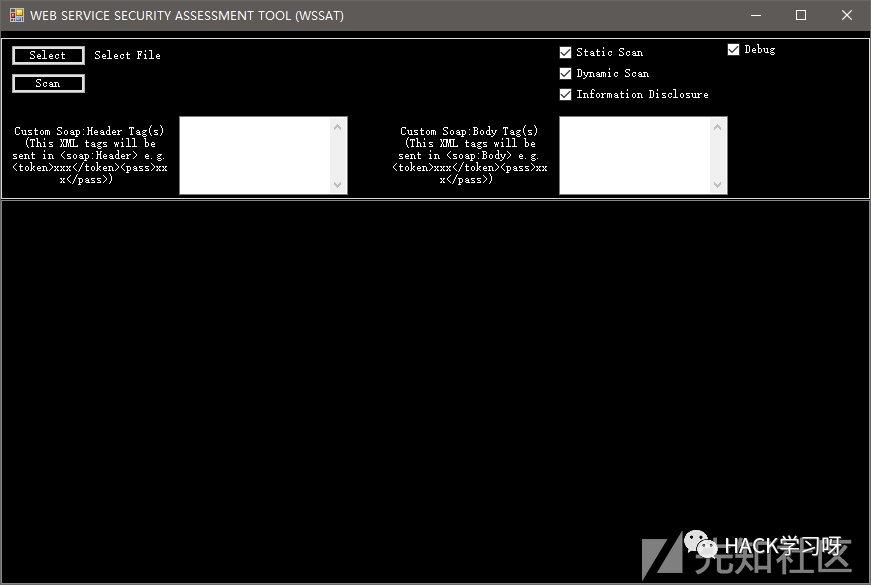
WS-Attacker

AWVS 的扫描也能直接测试 Web Service
2.2 RESTful API 测试
2.2.1 测试工具
常见的浏览器插件
Chrome Restlet Client
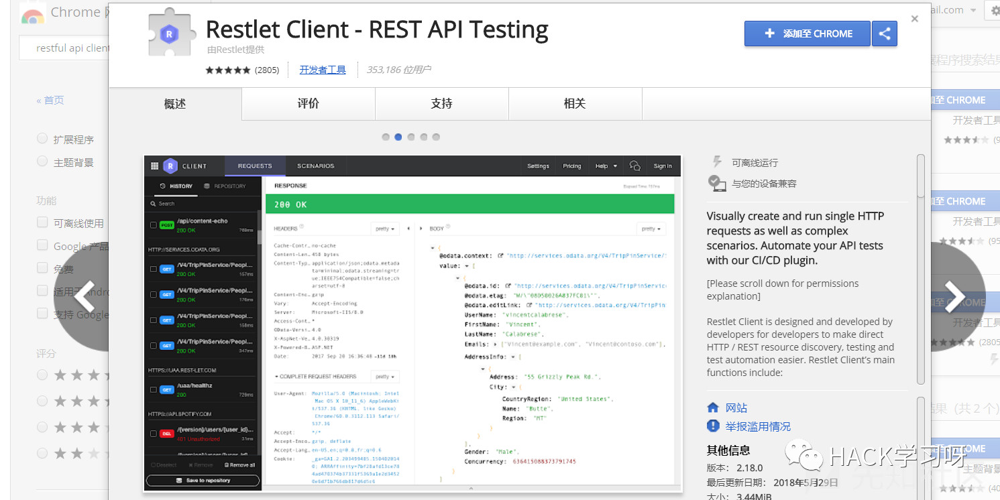
- Firefox RESTClient
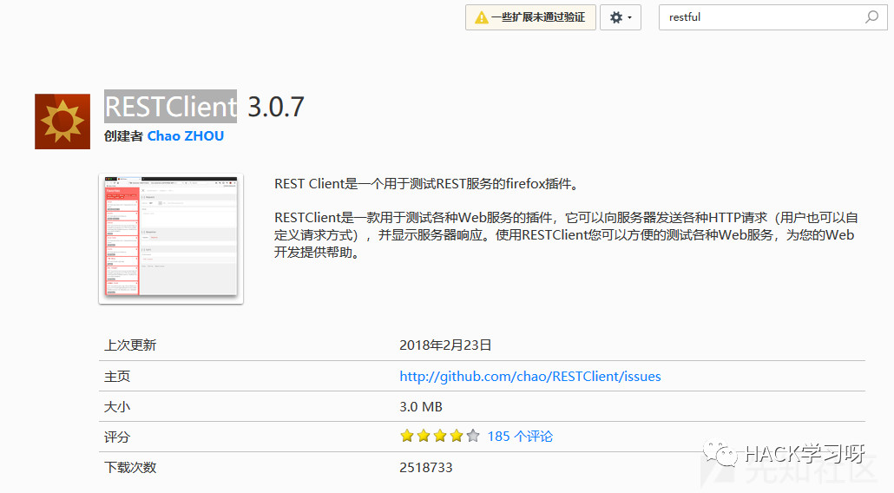
客户端工具
Postman

- Swagger
通常使用 Postman 的情况多些，有机会的话问下开发如何配置测试环境，直接配置一套一样的。
Postman 的代理配置：
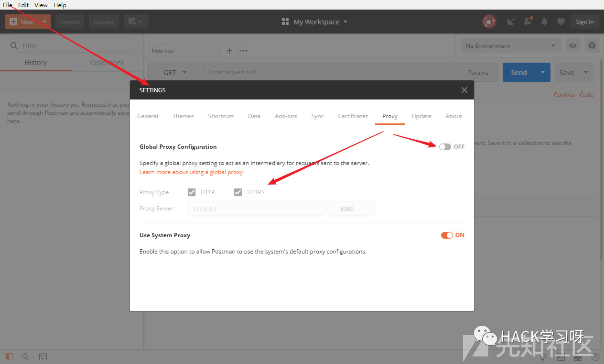
3 常见 API 相关漏洞和测试方法
还是主要以 Restful API 说明。
3.1 逻辑越权类
本质上可以说是不安全的直接对象引用，可以通过修改可猜测的参数获取不同参数下的响应结果。参数可以是用户名、用户 ID，连续的数字，变形的连续数字（各种编码或哈希），通过直接修改参数值完成越权的操作。
示例：
https://wooyun.shuimugan.com/bug/view?bug_no=189225
https://wooyun.shuimugan.com/bug/view?bug_no=150462
https://wooyun.shuimugan.com/bug/view?bug_no=140374
https://wooyun.shuimugan.com/bug/view?bug_no=106709
3.2 输入控制类
XXE，Restful API 的注入漏洞，XSS，溢出，特殊字符的处理。
示例：
https://wooyun.shuimugan.com/bug/view?bug_no=211103
https://wooyun.shuimugan.com/bug/view?bug_no=132270
https://wooyun.shuimugan.com/bug/view?bug_no=8714
3.3 接口滥用
没有请求频率限制导致的各种爆破和遍历，如短信验证码爆破、登录爆破、手机号遍历、身份证遍历等。
示例：
https://wooyun.shuimugan.com/bug/view?bug_no=141419
https://wooyun.shuimugan.com/bug/view?bug_no=66571
https://wooyun.shuimugan.com/bug/view?bug_no=36058
https://wooyun.shuimugan.com/bug/view?bug_no=147334
3.4 信息泄露
包括越权导致的信息泄露、畸形请求导致的报错响应。
示例：
https://wooyun.shuimugan.com/bug/view?bug_no=171313
https://wooyun.shuimugan.com/bug/view?bug_no=160095
https://wooyun.shuimugan.com/bug/view?bug_no=127457
3.5 HTTP 响应头控制
关于响应头：
发送 X-Content-Type-Options: nosniff 头。
发送 X-Frame-Options: deny 头。
发送 Content-Security-Policy: default-src 'none' 头。
删除指纹头 - X-Powered-By, Server, X-AspNet-Version 等等。
在响应中强制使用 content-type。
3.6 服务端配置漏洞
如服务端版本信息泄露，或服务端程序本身存在漏洞等。
4 API 安全加固
根据上面讲的测试方法，一般需要做好：
认证和授权控制
用户输入控制
接口请求频率的限制
输出控制
添加安全响应头参数
参考 API-Security-Checklist 和历史上的渗透测试结果设计适合自己组织的 API 安全开发规范。
参考
Web Service 的渗透测试参考：
https://blog.csdn.net/cq1982/article/details/44728489
https://t0data.gitbooks.io/burpsuite/content/chapter17.html
https://www.owasp.org/index.php/Web_Service_Security_Testing_Cheat_Sheet
https://www.soapui.org/security-testing/getting-started.html
http://blog.securelayer7.net/web-services-api-penetration-testing-part-2/
https://www.soapui.org/security-testing/getting-started.html
https://www.anquanke.com/post/id/85910
Restful API 的参考：
https://github.com/shieldfy/API-Security-Checklist
https://www.owasp.org/index.php/REST_Security_Cheat_Sheet

来源：先知社区
作者：白河愁